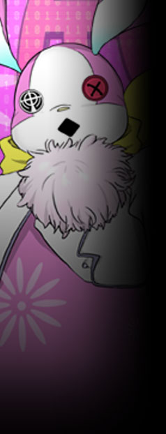

▼広報課【 ニーベルング 】
ユグドラシルにおける公共放送局。
ＴＶ・ラジオ・新聞・電脳世界でのメディア展開を広く・多く担っている。 セントラルタワー中階に拠点を置く。 ▼諜報課【 ラインゴールド 】
……その実態はユグドラシルの情報統制機関。
所属ルートとしては広報課からの異動や、ＹＤＦからの引き抜きが主。
【グングニル】の目と耳であり、ラグナロク事件においてもグレイプニルの後方支援で大いに活躍した。 公式サイト原文
上層におけるメディアの最先端。
電脳ネットワークの監視などによる電脳犯罪の抑止、
一般市民へのイベント・広報活動や慈善活動を行っている為、人気は上々。 セントラルタワー中階に拠点を置く。 |
|
 |
ファニー
|
||||||||||||||||
|
広報部ニーベルングの広報部長兼マスコット。
見かけに違わず性格は陽気でお茶目でフレンドリー。
広報部【ニーベルング】のトップであると同時に、
身体を別の生物に変化させる変身能力【 another 】を持つトランサー。
ちなみに現在の姿は、過去一度だけ無機物に変身して元に戻れなくなった名残。
「私だよー！ビックリした？ビックリしたー？」 |
|||||||||||||||||
公式サイト原文
ファニー 広報部ニーベルングの広報部長兼マスコット。
普段はピンクうさぎの着ぐるみとして行動している。
身体を別の生物に変化させる変身能力【 another 】を持つトランサー。
性格は陽気でフレンドリー。
普段は宣伝活動を兼ねて子供に風船配りなどをしているが、
「私だよー！ビックリした？ビックリしたー？」 性能：基礎５ｐステータス＋ボス特性５ｐ |
|||||||||||||||||